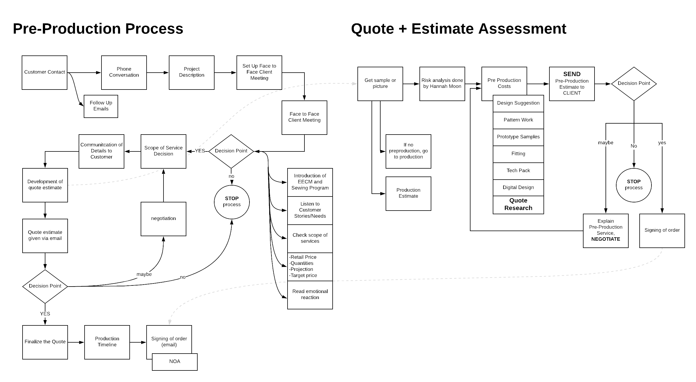
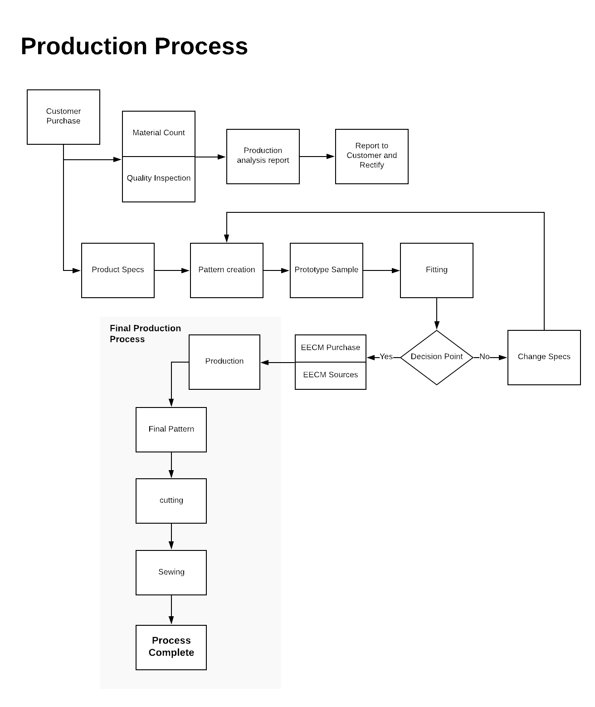
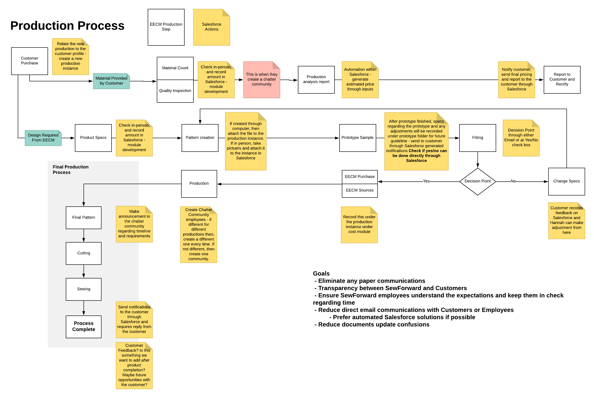
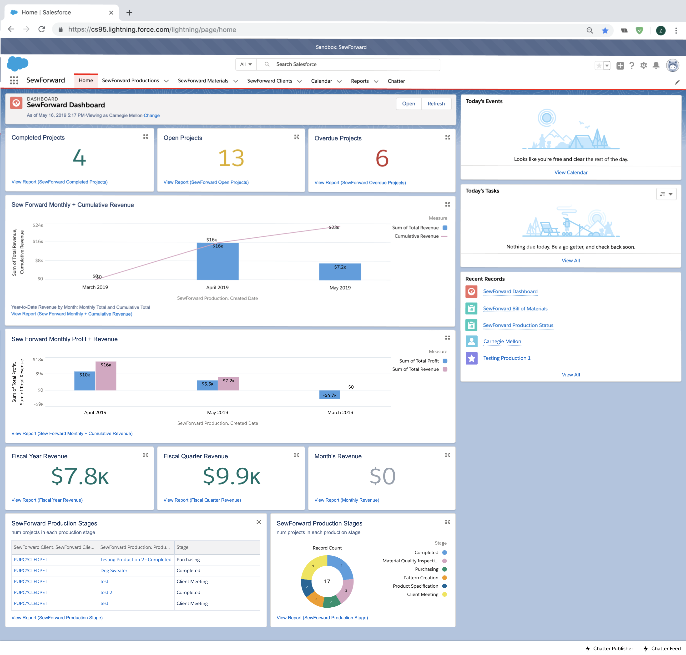
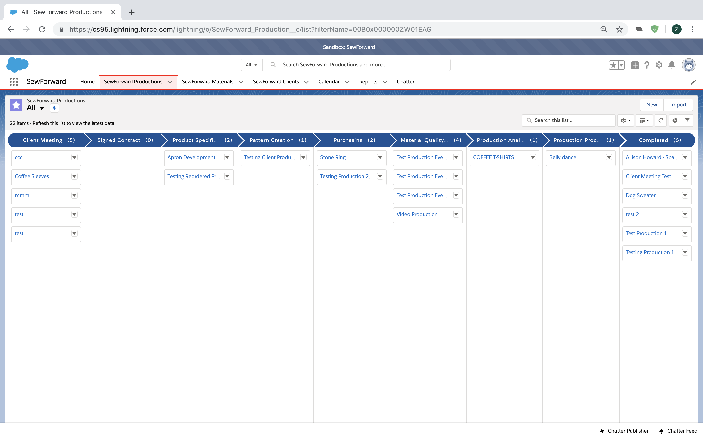
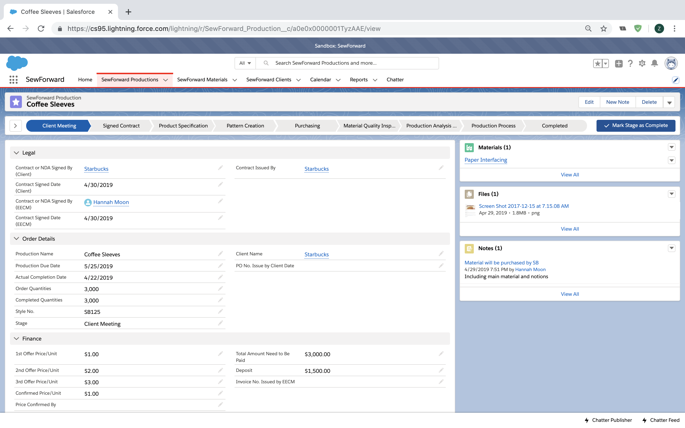
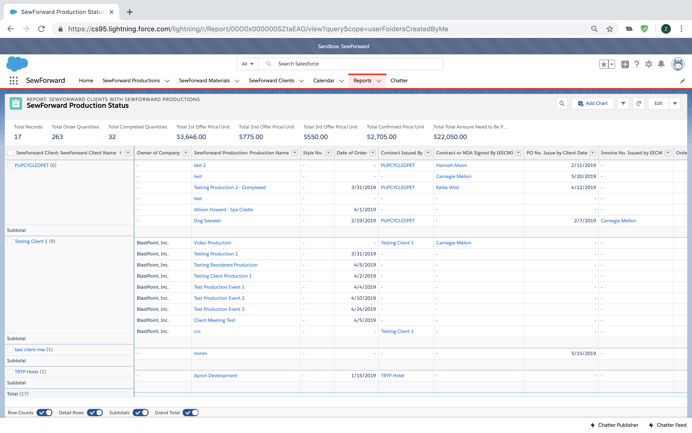
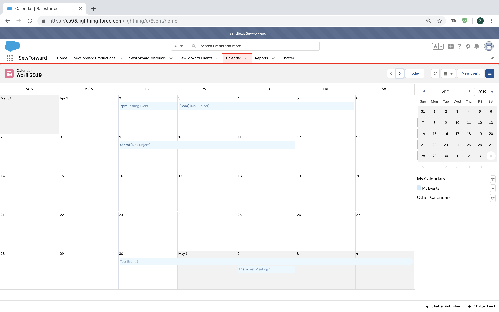
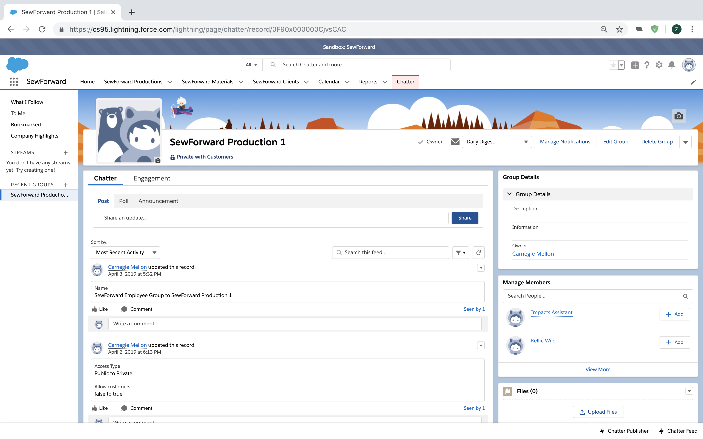

Skills
Consulting, Salesforce Lightning Platform
Timeline
3 month
Team
Cathy Dong
Zoe Teoh
Maggie Williams
Overview
Our team worked with the SewForward division within the East End Cooperative Ministry in Pittsburgh to help them integrate technology in the management of their sewing production cycle.
We hope this adds value to the SewForward program by facilitating the program manager's ability to monitor and manage the production task, assign tasks to employees and manage the documents and financial status of each project.
This would increase the efficiency of time and labor within the program. We have done so by implementing a custom Salesforce Application that will manage, track and automate steps in their production workflow.
About the Organisation
East End Cooperative Ministry
The East End Cooperative Ministry (EECM) aim to create a community of opportunity and support in Pittsburgh for those who cannot get the proper or necessary support in their daily lives.
Sew Forward Program
The Sew Forward Program have been training individuals in sewing for the past two years.The main goal is to help learn commercial sewing skills and pattern making to help them get employed in the textile industry or start their own business. Since the program is primarily grant funded and the program does not charge students for the training, they hope to be more self sustainable by taking on small manufacturing jobs with local makers.
Project Opportunity
Simplify Task Management Process
Keep Track of Document History
Simplify Production Cycle Analysis Process
Facilitate Employee and Client Communication
Reach Financial Self Sustainability
Solution
Move Process Management into Cloud-based Technolohy
Standardize Data Tracking and Management
Create Organization Framework to Guide Production Process
Develop Standardized Financial System and Performance Dashboard
The goal of our project is to create a system that tracks and monitors the business system and the production cycle of Sew Forward contracted sewing projects. We want this tool to provide access and insight to their project workflow, track their finances, and automate the tracking and monitoring tasks that the program manager, was doing to maintain and run the program. We additionally wanted to create a standardized database to allow the program manager to keep a detailed and consistent record of Sew Forward projects, clients, suppliers, employees, and purchase information for materials. This information is currently stored in several disconnected excel sheets rather than a standardized database, with only Hannah able to access and manipulate the data.
Process

Redesigned Workflow (Part 1)

Redesigned Workflow (Part 2)

Redesigned Workflow with Salesforce Integration
Project Outcomes
Layout

Homepage and Dashboard

Productions, Sorted by Production Stage

Individual Production Detail

Production Status Report

Calender View
